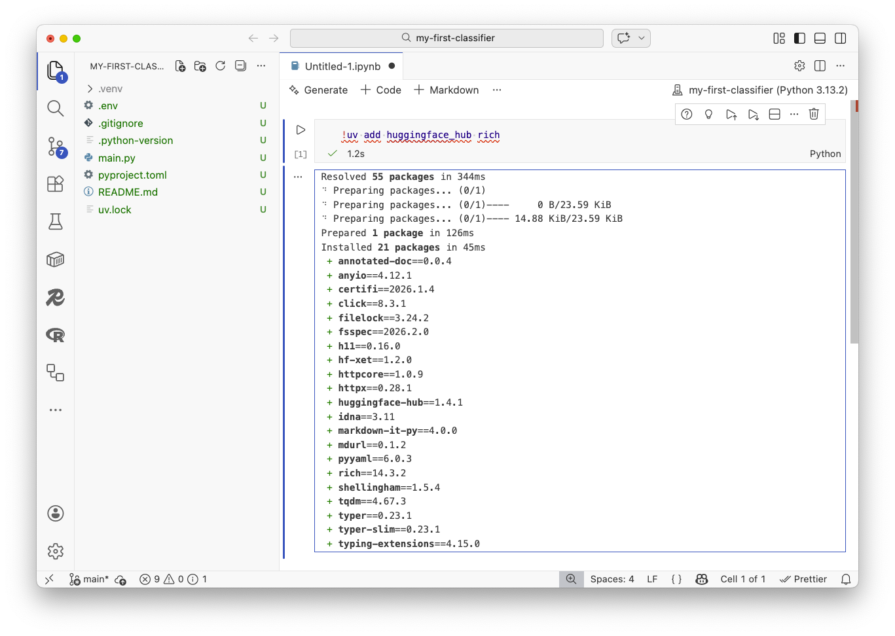

4. Prompting with Python¶
Now that you’ve got your Python environment set up, it’s time to start writing prompts and sending them off to Hugging Face.
First, you need to install the libraries we need. The huggingface_hub package is the official client for Hugging Face’s API. You should also install rich and ipywidgets, helper libraries that will improve how your outputs look in Jupyter notebooks.
A common way to install packages inside your notebook’s virtual environment is to run uv add in a cell. The ! is a shortcut that allows you to run terminal commands. You can put the two together like:
!uv add huggingface_hub rich ipywidgets
Drop that into the first cell of a new notebook and hit the play button in the top toolbar. You should see something like this:

Now let’s import them in the cell that appears below the installation output. Hit play again.
from rich import print
from huggingface_hub import InferenceClient
If everything is installed, that cell should complete without any errors. If you get an error, check the output from the installation cell to see if there were any issues you need to address.
Remember your API key? You’ll need it now. Copy it from that text file and paste it inside the quotation marks as a variable in a third cell. You should continue adding new cells as you need throughout the rest of the class.
token = "Paste your key here"
Note
In a more formal setting, you would want to keep your API key secret and not include it directly in your notebook. You could use environment variables to keep it safe. For the sake of simplicity in this class, we’ll just paste it in directly.
Next we need to create a client that will allow us to send requests to Hugging Face’s API. We do that by calling the InferenceClient tool provided by the huggingface_hub library. We need to pass it our API token so it can authenticate our requests.
client = InferenceClient(token=token)
Let’s make our first prompt. To do that, we submit a dictionary to Hugging Face’s chat.completions.create method.
The dictionary has a messages key that contains a list of dictionaries. Each dictionary in the list represents a message in the conversation. When the role is “user” it is roughly the same as asking a question to a chatbot.
{
"role": "user",
"content": "The content of your prompt goes here.",
}
We also need to pick an LLM from the list that Hugging Face supports.
Let’s start with Llama 4 from Meta. At the time of this writing, it was the company’s latest offering. Its full name is a mouthful: Llama-4-Maverick-17B-128E-Instruct-FP8.
We’ll drop that into the model parameter with our first prompt and see what happens. Let’s start by asking the model to explain the importance of data journalism in a concise sentence.
response = client.chat.completions.create(
messages=[
{
"role": "user",
"content": "Explain the importance of data journalism in a concise sentence",
}
],
model="meta-llama/Llama-4-Maverick-17B-128E-Instruct-FP8",
)
Our client saves the response as a variable. Print that Python object to see what it contains.
print(response)
You should see something like:
ChatCompletionOutput(
choices=[
ChatCompletionOutputComplete(
finish_reason="stop",
index=0,
message=ChatCompletionOutputMessage(
role="assistant",
content="Data journalism is crucial as it enables journalists to uncover insights, identify trends, and hold those in power accountable by analyzing and interpreting complex data, leading to more informed reporting and storytelling.",
reasoning=None,
tool_call_id=None,
tool_calls=[],
),
logprobs=None,
seed=None,
)
],
created=1771798979,
id="oYSotgN-zqrih-9d21e29c7eec059f",
model="meta-llama/Llama-4-Maverick-17B-128E-Instruct-FP8",
system_fingerprint=None,
usage=ChatCompletionOutputUsage(
completion_tokens=37,
prompt_tokens=21,
total_tokens=58,
reasoning_tokens=0,
),
object="chat.completion",
metadata={"weight_version": "default"},
prompt=[],
)
There’s a lot here, but the message has the actual response from the LLM. Let’s just print the content from that message. Note that your response probably varies from this guide. That’s because LLMs are mostly probabilistic prediction machines. Every response can be a little different.
print(response.choices[0].message.content)
Data journalism is crucial as it enables journalists
to uncover insights, identify trends, and hold those
in power accountable by analyzing and interpreting
complex data, leading to more informed reporting
and storytelling.
Let’s pick a different model to see if it provides a different perspective. One we could try is Gemma3, an open model from Google. Rather than add a new cell, let’s revise the code we already have and rerun it.
response = client.chat.completions.create(
messages=[
{
"role": "user",
"content": "Explain the importance of data journalism in a concise sentence",
}
],
model="google/gemma-3-27b-it",
)
Again, your response might vary from what’s here. Let’s find out.
print(response.choices[0].message.content)
Data journalism illuminates complex issues, empowers
informed decision-making, and drives accountability
through the rigorous analysis and visualization of data.
Sidenote
Hugging Face’s Python library is very similar to the ones offered by OpenAI, Anthropic and other LLM providers. If you prefer to use those tools, the techniques you learn here should be easily transferable.
For instance, here’s how you’d make this same call with Anthropic’s Python library:
from anthropic import Anthropic
client = Anthropic(api_key=api_key)
response = client.messages.create(
messages=[
{
"role": "user",
"content": "Explain the importance of data journalism in a concise sentence"
}
],
model="claude-opus-4-6"
)
print(response.content[0].text)
One common technique for improving results is to open with a “system” prompt to establish the model’s tone and role. Let’s switch back to Llama 4 and provide a system message that provides a specific motivation for the LLM’s responses.
response = client.chat.completions.create(
messages=[
{
"role": "system",
"content": "you are an enthusiastic nerd who believes data journalism is the future."
},
{
"role": "user",
"content": "Explain the importance of data journalism in a concise sentence",
}
],
model="meta-llama/Llama-4-Maverick-17B-128E-Instruct-FP8",
)
Check out the results.
print(response.choices[0].message.content)
Data journalism is revolutionizing the way we tell stories
and uncover truths by harnessing the power of data analysis
and visualization to provide in-depth insights and hold those
in power accountable, making it an indispensable tool for
a more informed and transparent society.
Now change the system prompt to something old school.
response = client.chat.completions.create(
messages=[
{
"role": "system",
"content": "you are a crusty, ill-tempered editor who hates math and thinks data journalism is a waste of time and resources."
},
{
"role": "user",
"content": "Explain the importance of data journalism in a concise sentence",
}
],
model="meta-llama/Llama-4-Maverick-17B-128E-Instruct-FP8",
)
Then re-run the code and summon J. Jonah Jameson.
print(response.choices[0].message.content)
*sigh* Fine. Data journalism is a tedious exercise in
number-crunching that often results in self-evident conclusions
and dull, chart-filled articles that put readers to sleep, but
I suppose it's become a necessary evil in this age of
"quantifying" everything.